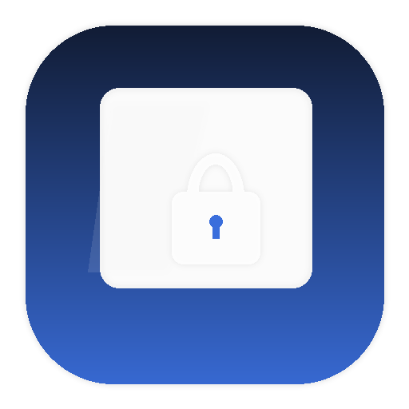

Live mirror overlay
Your desktop stays visible behind a subtle dimmed layer via ScreenCaptureKit — coworkers can watch the agent work.

MirrorLockFree · Open source · macOS 14+
MirrorLock is a menu bar app for botsitting — leave Cursor, Claude Code, or any AI agent running while you grab coffee. Your screen stays fully visible under a live mirror overlay. Keyboard, mouse, and trackpad are hard-locked. Unlock with Touch ID.
Local-only. No accounts. No analytics. Nothing leaves your Mac.
Your desktop stays visible behind a subtle dimmed layer via ScreenCaptureKit — coworkers can watch the agent work.
Keyboard, mouse, trackpad, scroll wheels, and media keys are blocked at the macOS event-tap level.
Rest your finger or enter your password. Global hotkey works even when you're deep in your IDE.
Curious hands? Wrong touches trigger a red border flash and alert sound so intruders know they've been caught.
Secondary monitors are blacked out while locked — no unprotected screens left showing your desktop.
Activate and unlock from anywhere with ⌘⇧M and ⌘⇧U. No need to find the menu bar first.
It lives quietly in your menu bar. Grant Screen Recording, Accessibility, and Input Monitoring once.
The mirror lock activates instantly — live desktop visible, all input blocked.
Your AI agent keeps working. Anyone can watch. Nobody can touch.
Return and press ⌘⇧U or use Touch ID. You're back in control.
Inspired by Wardlume's botsitting concept — reimagined with a simpler stack and MIT license.
| MirrorLock | Wardlume | |
|---|---|---|
| Visual | Live mirror + dim overlay | Metal glass shader |
| Activate | ⌘⇧M | ⌘⇧L |
| License | MIT | PolyForm Noncommercial |
| Min macOS | Sonoma 14+ | Tahoe 26+ |
Downloads the latest release, installs to Applications, clears quarantine, and launches.
curl -fsSL https://raw.githubusercontent.com/shubhransh-gupta/mirrorLock/main/scripts/install.sh | bashRequires Xcode 16+ on macOS 14+.
git clone https://github.com/shubhransh-gupta/mirrorLock.git
cd mirrorLock
open MirrorLock.xcodeproj